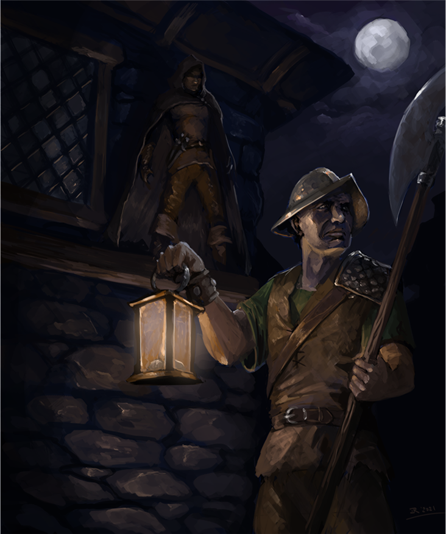

Start-Up
Welcome to Avorkarth, a role-playing game set in a realm of low-fantasy adventure. This rulebook will aid players in setting up a role-playing session (campaign/adventure), based within the realm of Avorkarth. The following ruleset will give an understanding of of the many ways the players may manipulate or interact with the world they find themselves in.
Long time table-top players may find this game is not quite as mechanically balanced as similar table-top games out there, with the idea of being more immersive.
Each section of the rulebook will tend to a specific set of rules that defines what actions or choices the player's character may take. If this is the first time that a player will enter into the realm of Avorkarth, it is highly recommended that they read the rulebook even if they've previously played other similar table-top role-playing games.
Base Requirements
Players (Recommended: 3 to 7)
The players of Avorkarth are separated into two categories.Game Master (GM): A single player takes the role of arbitrator for the current and future sessions, known as the Game Master. Their role is to control all non-player characters, creatures and challenges and are also in charge of creating and/or setting the stage for the adventure that the remaining players will go through.
Adventurers: The remaining players each control a single character, usually of their own creation, and are tasked with finishing and beating the goal given by Game Master with the skills and abilities of their created character. Unlike most table-top games, Avorkarth campaigns are usually written so as to be immersive, and therefore are able to be beaten in many ways, not always through bloodshed or combat.
Area of Play
Avorkarth is based upon traditional paper and pencie role-playing games, and as such may be fully played as along as players have access to six-sided dice or a dice-rolling program/app and a method of jotting down information such as a tablet or pad of paper.
While playing around a table with friends is an incredible experience, it is also entirely possbile to play with others from around the world using online voice-chat systems. There are even many websites and digital programs dedicated to recreating table-top like experiences.
6 Sided Dice
Avorkarth uses 6 sided dice as its main playing component, with rolling dice representing the randomality of life for most characters actions. Should a character wish to jump, charm, sooth, tend, attack or do any other action in which the result is not wholly predictable, they would roll the required amount of dice and compare the results with the dice-rolling charts to know if they've succeeded.
Adventurers - Character Sheets
Players who take on the rolw of the adventurers will create and take control of a single character, and avator of their own will within the realm. These characters do not necessarily represent the player themselves, but rather are a character of their own imagination. They can have their own personality, set of skills, strengths or weaknesses of completely unrelated note to their player. Most information and numbers required to create a character may be found in the Avorkarth lorebooks.

Dice Rolls
Dice rolls are the most important part of the whole game system. Whenever a character or creature wishes to interact with the world and there is a chance of failure, they must roll a die. This die roll is the equivalent of the attempt as well as the result of the action, be it good... or bad.
Rolling
Roll Value
The value of a roll is dependant on the character's relevant skill or attribute value. Unlike mahy other table-top role-playing games, the characters bonuses and values are not added to the dies's results. Instead the value is used as a check against the value of the action the character is attempting.
Minimum Values
Any total value (after any calculations) that is below 1 is always considered as a value of 1.
Difficulty Check
The difficulty check for any dice roll is the oppossing value that is compared against the roll value. Every action has a counter, be it a characters ability to resist a charm or to dodge an incoming attack. Difficulty checks are often called or known as "DC" for short.
Determining Outcomes
To see if a character's action was or will be successfull, they compare their roll value against the difficulty check. They then roll a die and compare the result with the table below. The greater the difference between both values the more the die's result leans towards a particular outcome.
Overpowering
If the difference between a value and the DC is 10 or more, it is considered an automatic critical success/fail. This is considered before checking the roll table.
Role Example
A skillful thief is attempting to stealthily hide from the nearby patrolling guard. Being skilled at hiding in shadows, they have a value of 8 for their hide action. The guard would counter this with a spot check to see if they notice the theif's movement. The guard has a value of 5 for their spot action. That would mean that the spot check rolled by the guard is less than the DC (the theif's hide). When the guard rolls their chec, a 1 would criticaly fail, a 2 or 3 would fail, a 4 or 5 would be a partial success and a 6 would be a success. With the die's result, they would then read the spot skill's results in the rulebook to determine if they notice the theif or not.
"Lanterns do not aid the burden of inattentive eyes." - Thief's saying
| Critical Fail | Fail | Partial Success | Success | Critical Success | |
|---|---|---|---|---|---|
| Roller is 7+ Greater | - | - | 1 | 2-3 | 4+ |
| Roller is 5+ Greater | - | - | 1-2 | 3-4 | 5+ |
| Roller is 3+ Greater | - | 1 | 2-3 | 4 | 6 |
| Roller is 1+ Greater | - | 1-2 | 3 | 4-5 | 6 |
| Roller is Equal | 1 | 2 | 3-4 | 5 | - |
| DC is 1+ Greater | 1 | 2-3 | 4 | 5+ | - |
| DC is 3+ Greater | 1-2 | 3 | 4-5 | 6 | - |
| DC is 5+ Greater | 1-2 | 3-4 | 5 | 6 | - |
| DC is 7+ Greater | 1-3 | 4 | 5+ | - | - |